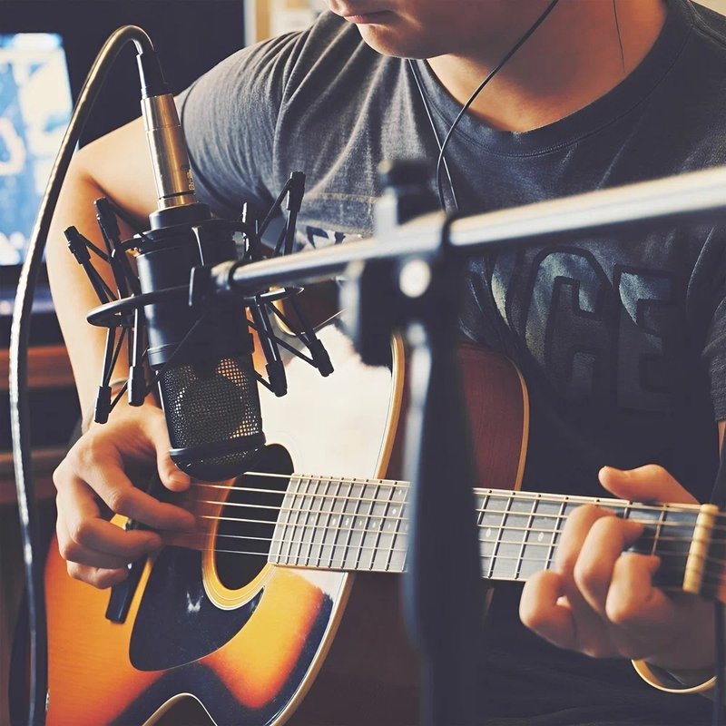

Андрей Трабл, FullJazz
Трамвай (Acoustic Version)
Текст: Андрей Трабл, FullJazz
Гитара: Саша Носик
Глаза закрой, со мной пошли по рельсам. Мы катим в одну сторону уже почти что год. Нас, может, обесточат или я сойду в апрель сам, это не страшно. Я-то ведь почти что кот. Остановки заполняют паузы, месяцами одинаковый маршрут. Память о нас легко закроешь, закрыв браузер. Не прислоняйся к двери, мы едем туда, где ждут. Мы не добыли то, что запомнят. Этим городам плевать на слабых. Еле дыша, по битам душа, по пятам дурная слава. Мы где-то там, где плывут облака и снег, ожидаем рассвет. Я жив, пока я в шуме города слышу твой смех. Кто-то там на рингтон уйдёт, мы то уйдём туда, где звёзды. Трамвая ход сплетёт в одну дорогу наши дни. Эти даты - пустяк всё, я могу ведь тоже быть серьёзным, только это не я уже буду. Сходим вместе, не тяни. Едем. Мы едем. Едем не спеша. К облакам катимся на трамвае. Либо с нами ты, снами либо не мешай. Я сегодня опять умираю. Всё по путям. Пока вы скалитесь, я улыбаюсь. Не музыканты мы, но такты в стук колёс бьём. Я – по трамваям, вы – по джипам скачите, прославясь, а мы-то, только преуспев где-то, за время пьём. Нас укрывают вагоны от холода зимой. Пробив билет, я не пробью себе дорогу в свет. Давай хотя бы раз прокатишься со мной, и уже после я скажу, что для тебя меня тут больше нет. Мне фото на память, точно. Годы пытали обоих нас. И я не нуждаюсь в городе, где порознь утром валим. Лепить на биты, пока ты уходила от своих же фраз, я не устану, знай, так же шатаясь по трамваям. Ничто не лечит. Время – только математик, часы прокляты, ведь предначертано лишь вытекать им. Но по путям трамвайным шагаем тут в небеса мы, и пускай ошибки будут только в написании. Едем. Мы едем. Едем не спеша. К облакам катимся на трамвае. Либо с нами ты, снами либо не мешай. Я сегодня опять умираю.